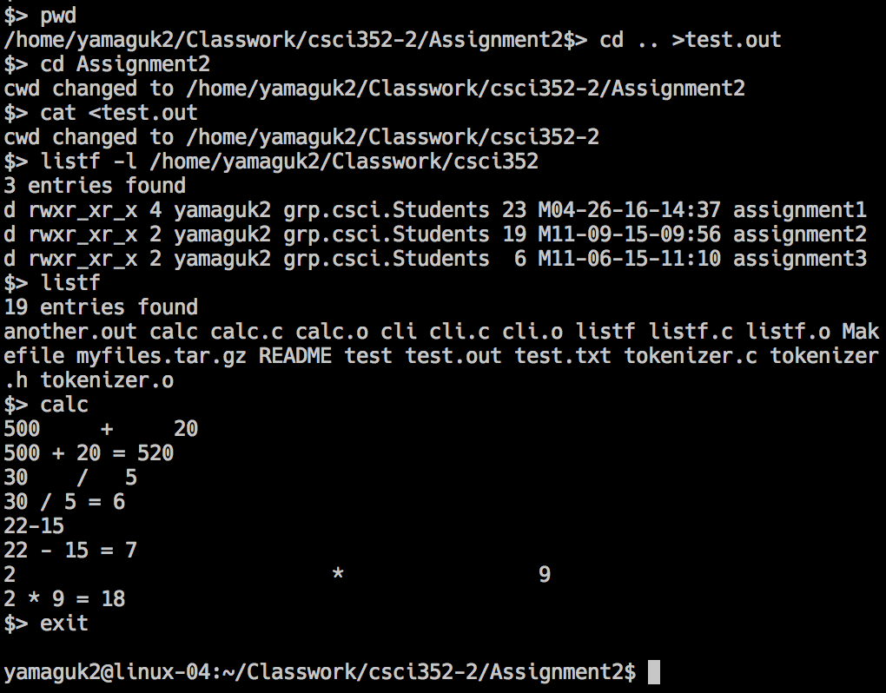
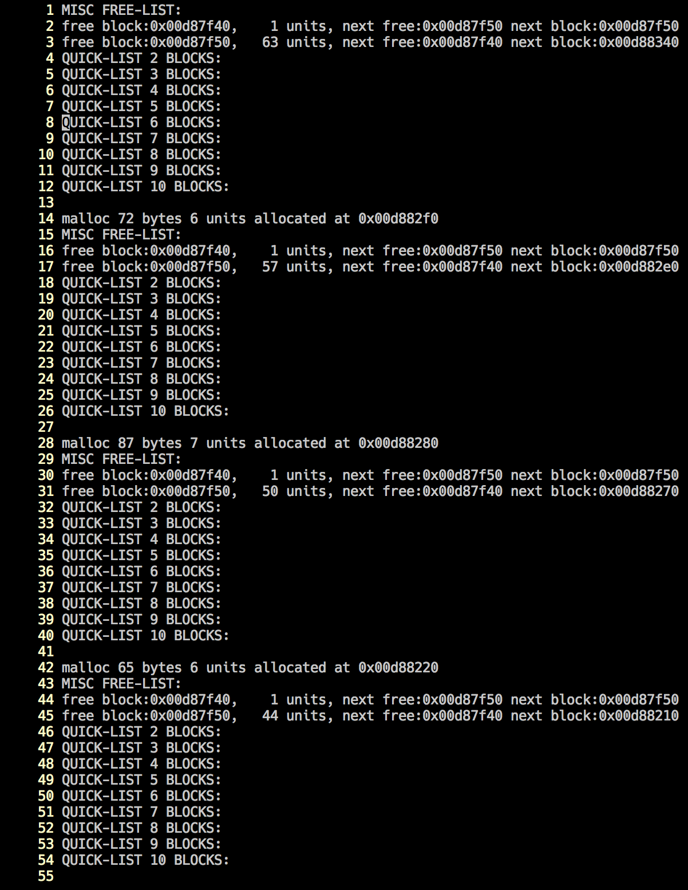

I am a recent graduate from Western Washington University. I have a Bachelor of Science in Computer Science and a minor in Geology. In addition to programming I enjoy using my creativity and spending time with my dogs.
I became the AWC Website Administrator winter quarter 2015. As the website grew and the need for additional hands increased I initiated the Web Team and was the coordinator for the team from winter quarter 2016 until fall 2016.
The ACM hackathon was a 24-hour coding competition. Our team created an email service that allowed someone to send secure emails.
View our project on GitHubWith the increasing presence of weddings on the internet I of course was excited to create my own wedding website.
View my wedding websiteI had the task of creating my own command line interpreter that would run within the terminal. As part of the assignment I also created my own ls command called listf and a very simple calculator program that showed our ability to call external programs from within a process. In addition to those external commands I also had to make the CLI change the directory and print the current working directory.
Because this is a class assignment I cannot share the version control repository. But below is a screen shot of my CLI in action.
For this assignment I needed to implement the quick-fit algorithm for heap management in C. My program started with nine empty linked lists to be used as quick access lists to store the most common memory block sizes.
Because this is a class assignment I cannot share the version control repository. But below are a couple screen shots of the test of my heap management program. The first image shows the empty quick-lists. The second image shows that at the end of the test there are blocks of the same size being stored in their respective quick-lists.
